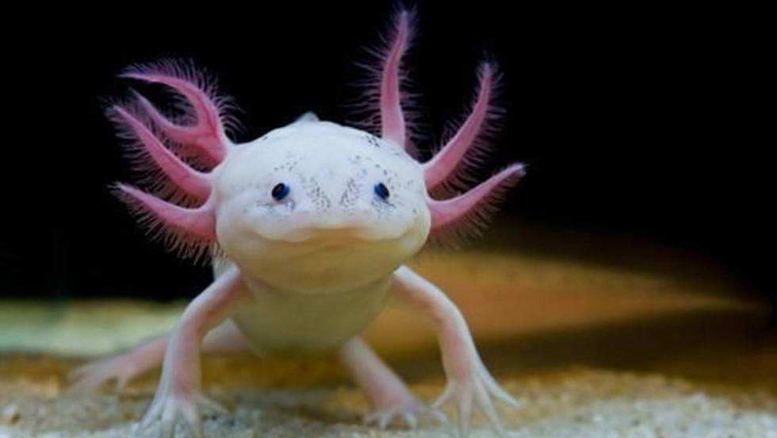
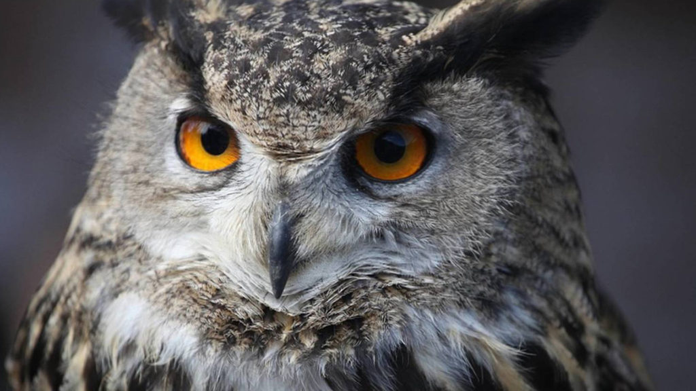
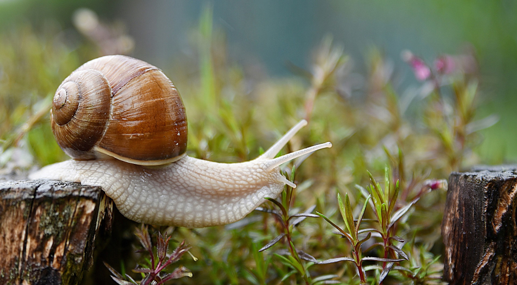
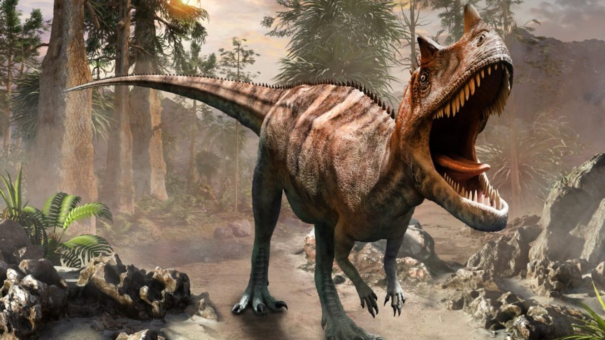
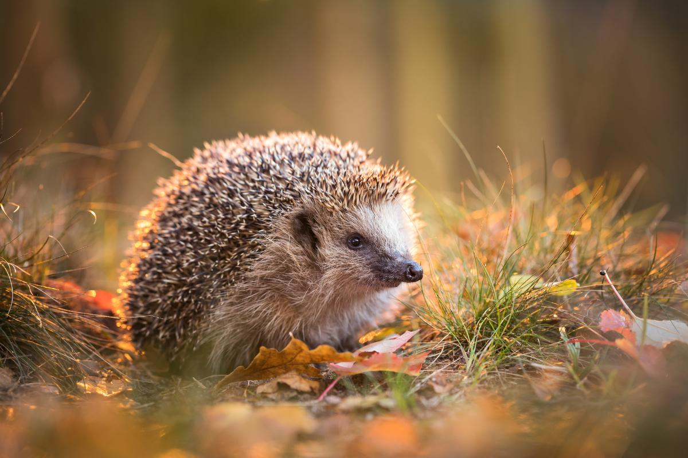
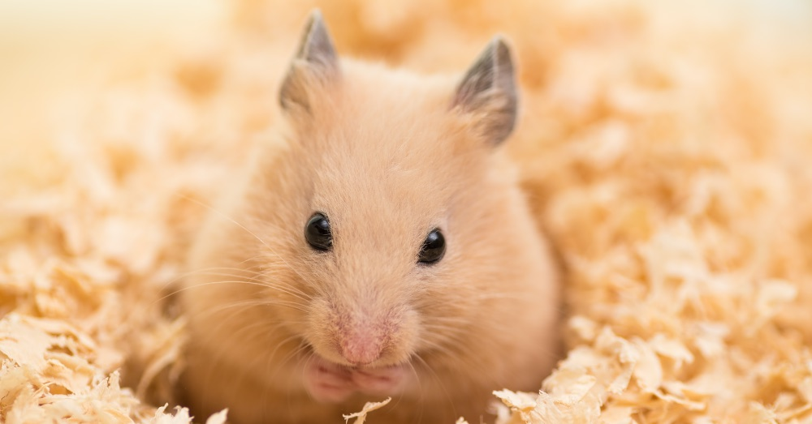
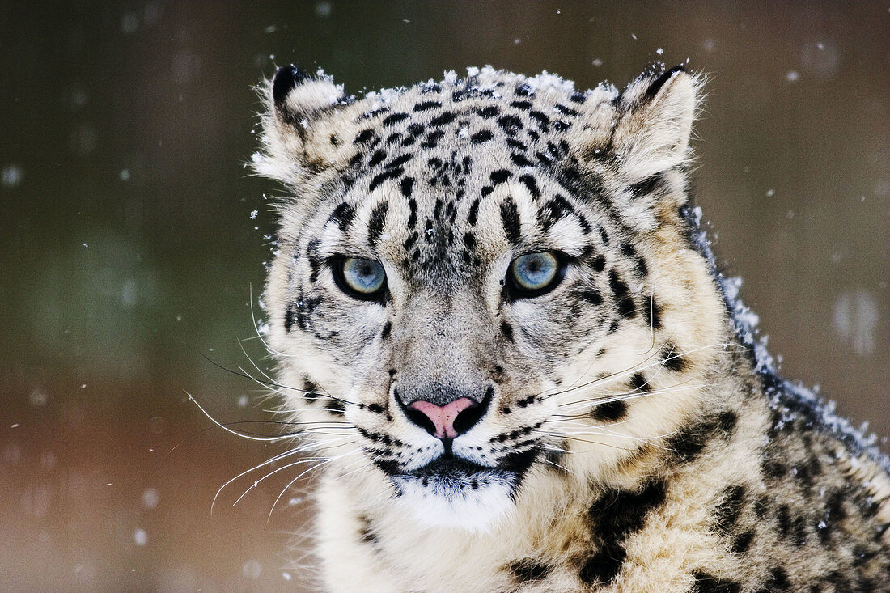
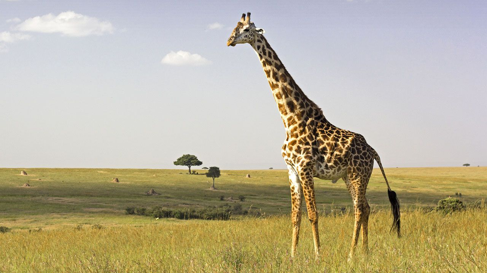
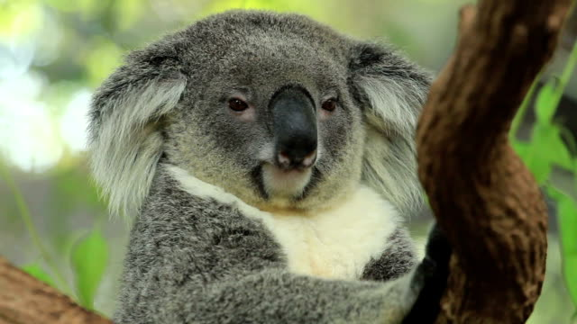
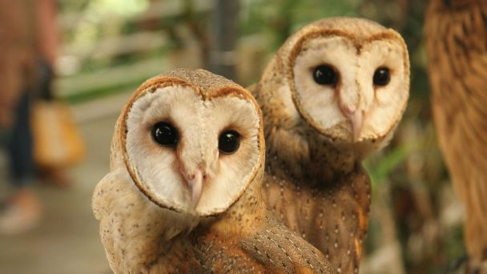

Ajolote
El ajolote (Ambystoma mexicanu), que también es conocido como “monstruo acuático”, es un anfibio perteneciente a la especie de las salamandras.
Fuente: National Geographic: Ajolote
Búho
Un búho es un animal que pertenece al clado de los estrígidos. Se trata de un ave de hábitos nocturnos y rapaz, que se caracteriza por contar con plumas que parecen orejas.
Fuente: Definición.de: Búho
Caracol
El caracol es un molusco de la especie gasterópoda, estos animalitos cuentan con una concha en forma de espiral; suelen habitar en diversos tipos de ambiente.
Fuente: ConceptoDefinición : Caracol
Dinosaurio
Los dinosaurios fueron unos reptiles que vivieron hace más de 60 millones de años en la Tierra, y que la tuvieron bajo su dominio más de 135 millones de años.
Fuente: ConceptoDefinición : Dinosaurio
Erizo
El erizo es un mamífero insectívoro que mide aproximadamente 15 centímetros y pesa hasta 400 gramos. Tienen el lomo cubierto de púas y el resto cubierto de pelo marrón o blanco.
Fuente: Animales y biología : Erizos
Foca
Las focas son unos mamíferos marinos que se han adaptado a vivir en el medio acuático por largos períodos de tiempo aunque también pueden habitar en la tierra.

Fuente: Anipedia : Foca
Gato
Los gatos son una especie perteneciente a la familia de los félidos, son mamíferos cuadrúpedos que poseen una cola, además de ser cazadores innatos.

Fuente: Skoon : Gato
Hamster
Los hámster son roedores domesticados de aproximadamente 15 cm de longitud y entre 100 y 180 gramos de peso.
Fuente: SuperPet : Hamster
Irbis
También conocido como el Leopardo de las Nieves, es un gran felino nativo de las montañas de Asia central e Himalaya, en latitudes próximas a los 6.000 m.
Fuente: DeAnimalia : Irbis
Jirafa
La jirafa es el animal más alto del mundo. Se trata de un mamífero rumiante y artiodáctilo que puede alcanzar los cinco metros de altura gracias a su extenso cuello.
Fuente: Definición.de: Jirafa
Koala
El koala es un animal mamífero que se asemeja a un oso de tamaño pequeño, una especie endémica de Australia que es calificada como arborícola ya que vive en los árboles.
Fuente: Definición.de : Koala
Lechuza Común
La lechuza común es una ave nocturna que caza durante el crepúsculo y la noche. Su oído excepcional le ayuda a detectar los ruidos que hacen los roedores.
Fuente: Zoo del Pirineu : Lechuza Común